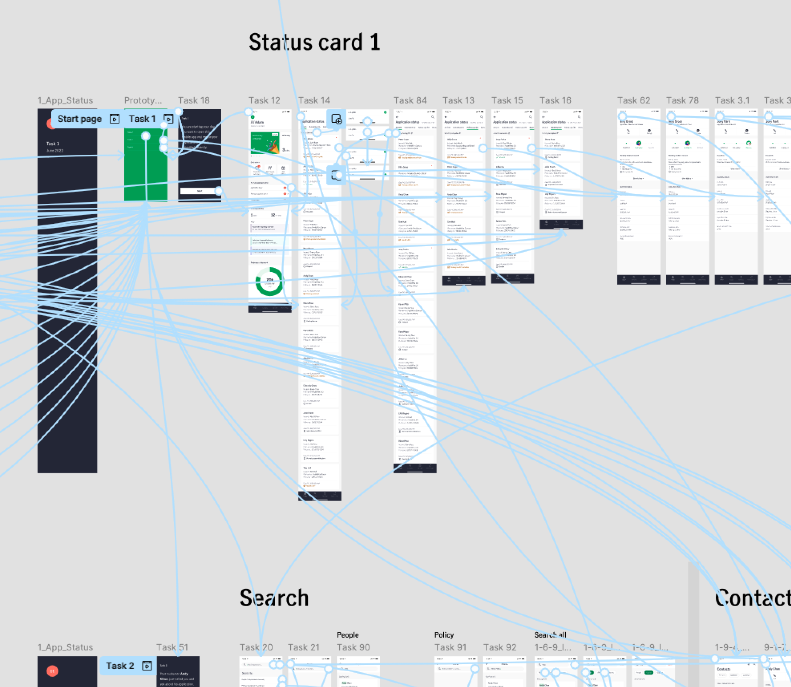

Policy Application Status Tracking
Insurance | B2B
The regional design team at Manulife (John Hancock), constantly seeks opportunities to streamline the insurance sales process for their agents. This project aimed to decrease policy application processing time and unify the status tracking experience across four major Southeast Asian markets—Vietnam, Philippines, Indonesia, and Malaysia.
App Store
My Role
As the UX Designer in the regional team, I drove the UX and UI design while collaborating with researchers, product managers, and engineers to create a unified agent experience across markets.
Problem
Agents lacked a reliable way to track applications. The manual process significantly impacted sales efficiency and led to customer complaints due to the long processing time.
Outcome
Decreased pending application turnaround time from 3 weeks to 2 weeks that led to a faster sales cycle.
Standardized cross-market status tracking that optimized the sales journey oversight across Southeast Asian markets.
Research
Our first step was to understand each market's current state, agent pain points, and application status update processes.
Agent Notification Workshop
We discovered that agents struggled with the manual workflow. The main pain point was they relied solely on system emails for updates, and often missing important information about pending cases and had to reach out to back-office staff for clarification.


Core vs Market Flow
To get a full picture of the current process, I closely worked with business analysts to interview the market teams. From there we mapped out the status journey with agent actions associate to it.

Design exploration
The design scope centered around the on-the-go context, as agents spend 70% of their time working outside. In addition to the ability to send push notifications for urgent updates, we adopted a progressive disclosure approach—providing visual cues to guide users to explore further when needed.

The detail page was information-packed; we spent a lot of time exploring layouts that would establish a clear information hierarchy.

However, everyone has an opinion on the content updates...
"I don't think it's necessary to use different colors to represent the urgency of the status..."
– Product Owner
"The notification badge on the home page should reflect the number of applications..."
– Business Analyst
"We should show 'Case FYC' on the application list page..."
– Product Manager
User Testing
Working alongside a research agency and testing the design in on-the-go scenarios, we evaluated the design's effectiveness. We wanted to address the disagreements with the product team and identified gaps in requirements between markets.

Key Observations:
- The needs when looking for an application vary by product type.
- Agents didn’t use the search function since they typically handle few applications simultaneously.
- Agents wanted more detailed status information for a more seamless workflow.
Final Design & Outcome
With the testing insights, the product team and I were able to make better decisions about which functionality we should prioritize given our timeline and resources. We also deprioritized the search function, as the testing revealed that most agents only have a few applications at a time.
Scenario 1: Agent receives a push notification for an urgent status update.
[Text here...]

Scenario 2: Agent checks application statuses during idle time between customer meetings.
[Text here...]
Components & Language considerations
[Text here...]

Takeaway
After finishing up the Application Status features, I moved to another project because of a resource shift. The insights we gathered there? They fed directly into our regional ecosystems. What you see on the surface looked pretty minimal, but underneath, we had to really dig into a ton of complex update logic. From picking the right colors to figuring out shapes and visual cues, it all came down to making that complicated system feel genuinely simple and direct on the UI.
More Projects